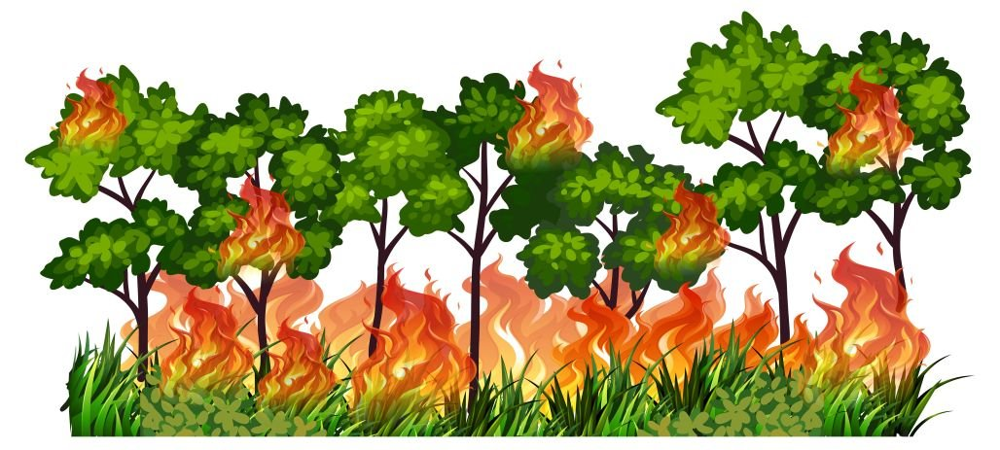

Природный пожар

Лесной пожар - неконтролируемое горение растительности, стихийно распространяющееся на лесной территории.
- Причины:
- Человеческий фактор.
- Грозовые разряды.
- Классификация
- Малый (0,2-2 га)
- Небольшой (2-20 га)
- Средний (20-200 га)
- Крупный (200-2000 га)
- Катастрофический (более 2000 га)
- Правила поведения:
- Определить направление ветра.
- Определить направление распространения пожара.
- Выбрать мрашрут выхода из леса.
- Дышать через мокрую ткань. При нехватке кислорода пригнуться к земле.
- Выходить из леса только в наветреннубю сторону и быстро.